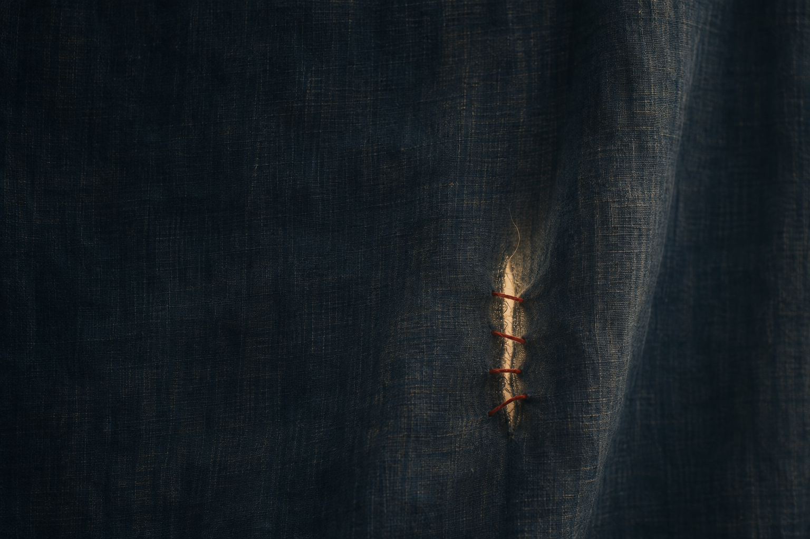

暗靛蓝布面中透出一线暖光，四针不齐的红线把裂口轻轻接住。

打开媒体文件 · 下载源码与提示词 · 来源与验证
ChatGPT 内置图像生成
1536×1024 PNG，单次生成，原图与完整原始提示词保留。目视、独立静态审查、原包 CRC 与 5 个成员哈希已核。画面偏暗，穿针结构不作工艺证据；作为候选发布，不代表用户已认可。
本任务原创主题、构图与提示词，一次生成，无输入参考图或外部图像。非实物摄影；未作穷尽相似性检索，不作版权法律保证。公开复用许可尚未选定。